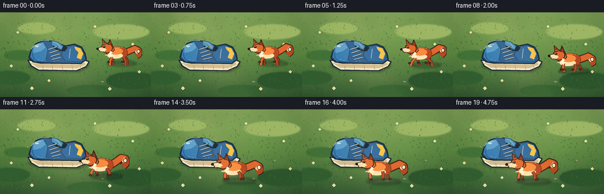
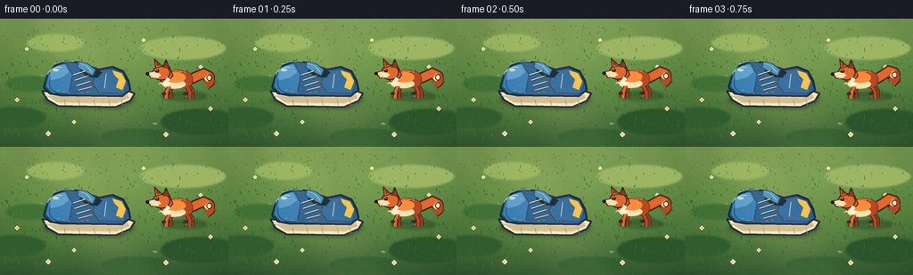
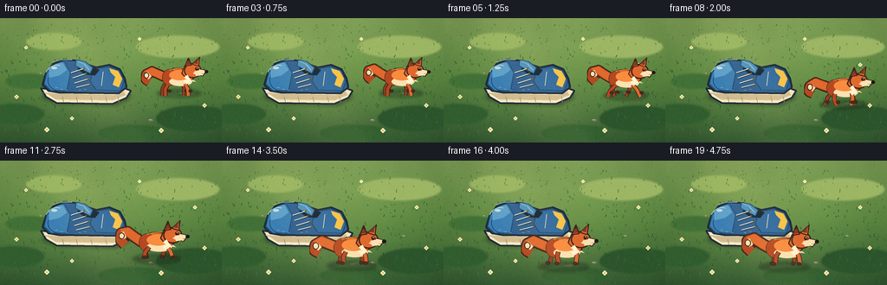
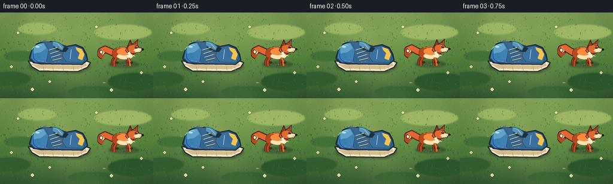

CODING AGENTS AS PIXEL WORLD MODELS
traex/DeepSeek-V4.1-Flash · dynamic_spatial_relationship_0030
点击播放 · 原生 RGB 像素
逐轮保存的候选
回放视频、检查图与代码变化。
每份候选均可单独播放。实际图片检查记录在下方工具轨迹中。
候选 01播放与检查图
点击播放 · 原生 RGB 像素


展开代码变化
--- 上一保存版本
+++ 本次保存版本
@@ -0,0 +1,571 @@
+from pathlib import Path
+import math
+
+import numpy as np
+from PIL import Image, ImageDraw, ImageFilter
+
+import artifact_io
+
+
+ROOT = Path(__file__).resolve().parent
+WIDTH = 256
+HEIGHT = 144
+FRAMES = 20
+FPS = 4
+SS = 4
+W = WIDTH * SS
+H = HEIGHT * SS
+
+
+def sc(value):
+ return int(round(value * SS))
+
+
+def point(x, y):
+ return (sc(x), sc(y))
+
+
+def points(seq):
+ return [point(x, y) for x, y in seq]
+
+
+def rgba(color, alpha=255):
+ return tuple(color) + (alpha,) if len(color) == 3 else tuple(color)
+
+
+def mix(a, b, t):
+ return tuple(int(round(a[i] * (1.0 - t) + b[i] * t)) for i in range(3))
+
+
+def smoothstep(t):
+ t = max(0.0, min(1.0, t))
+ return t * t * (3.0 - 2.0 * t)
+
+
+def ease_in_out(t):
+ t = max(0.0, min(1.0, t))
+ return 0.5 - 0.5 * math.cos(math.pi * t)
+
+
+def cubic_bezier(p0, p1, p2, p3, t):
+ u = 1.0 - t
+ return (
+ u * u * u * p0[0] + 3 * u * u * t * p1[0] + 3 * u * t * t * p2[0] + t * t * t * p3[0],
+ u * u * u * p0[1] + 3 * u * u * t * p1[1] + 3 * u * t * t * p2[1] + t * t * t * p3[1],
+ )
+
+
+def draw_ellipse(draw, box, fill=None, outline=None, width=1):
+ draw.ellipse(tuple(sc(v) for v in box), fill=fill, outline=outline, width=max(1, sc(width)))
+
+
+def draw_polygon(draw, seq, fill=None, outline=None, width=1):
+ draw.polygon(points(seq), fill=fill)
+ if outline is not None:
+ draw.line(points(seq + [seq[0]]), fill=outline, width=max(1, sc(width)), joint="curve")
+
+
+def draw_line(draw, seq, fill, width=1):
+ draw.line(points(seq), fill=fill, width=max(1, sc(width)), joint="curve")
+
+
+def draw_arc(draw, box, start, end, fill, width=1):
+ draw.arc(tuple(sc(v) for v in box), start, end, fill=fill, width=max(1, sc(width)))
+
+
+def radial_light(size, center, radius, color, strength):
+ width, height = size
+ yy, xx = np.mgrid[0:height, 0:width]
+ dist = np.sqrt((xx - center[0]) ** 2 + (yy - center[1]) ** 2)
+ mask = np.clip(1.0 - dist / radius, 0.0, 1.0) ** 2 * strength
+ layer = np.zeros((height, width, 3), dtype=np.float32)
+ layer[:] = color
+ return layer, (mask * 255).astype(np.uint8)
+
+
+def make_background():
+ y = np.linspace(0.0, 1.0, H, dtype=np.float32)[:, None]
+ top = np.array([126, 164, 91], dtype=np.float32)
+ middle = np.array([92, 139, 69], dtype=np.float32)
+ bottom = np.array([50, 91, 52], dtype=np.float32)
+ blend = np.where(y < 0.48, y / 0.48, (y - 0.48) / 0.52)
+ grad = np.empty((H, W, 3), dtype=np.float32)
+ for channel in range(3):
+ grad[:, :, channel] = np.where(
+ y < 0.48,
+ top[channel] * (1.0 - blend) + middle[channel] * blend,
+ middle[channel] * (1.0 - blend) + bottom[channel] * blend,
+ )
+
+ rng = np.random.default_rng(17)
+ coarse = rng.normal(0.0, 1.0, (18, 32)).astype(np.float32)
+ coarse = np.repeat(np.repeat(coarse, 32, axis=0), 32, axis=1)[:H, :W]
+ coarse_img = Image.fromarray(np.uint8(np.clip(coarse * 22 + 128, 0, 255)), "L")
+ coarse_img = coarse_img.filter(ImageFilter.GaussianBlur(26))
+ coarse = (np.asarray(coarse_img, dtype=np.float32) - 128.0) / 128.0
+ grad += coarse[:, :, None] * np.array([14.0, 18.0, 11.0], dtype=np.float32)
+
+ light, mask = radial_light(
+ (W, H),
+ (W * 0.46, H * 0.43),
+ W * 0.62,
+ np.array([255.0, 231.0, 157.0], dtype=np.float32),
+ 0.13,
+ )
+ grad = grad * (1.0 - mask[:, :, None] / 255.0) + light * (mask[:, :, None] / 255.0)
+
+ vignette_dist = np.sqrt(
+ ((np.arange(W)[None, :] - W * 0.5) / (W * 0.63)) ** 2
+ + ((np.arange(H)[:, None] - H * 0.52) / (H * 0.78)) ** 2
+ )
+ vignette = np.clip(1.0 - (vignette_dist - 0.38) * 0.22, 0.78, 1.0)
+ grad *= vignette[:, :, None]
+ image = Image.fromarray(np.uint8(np.clip(grad, 0, 255)), "RGB").convert("RGBA")
+ draw = ImageDraw.Draw(image)
+
+ # Broad, low-contrast clumps give the meadow depth without competing with the actors.
+ clumps = [
+ (17, 111, 34, 12, (46, 91, 48, 120)),
+ (205, 33, 48, 13, (151, 179, 102, 88)),
+ (224, 116, 44, 15, (42, 83, 45, 145)),
+ (62, 27, 32, 10, (146, 177, 98, 72)),
+ (151, 133, 38, 10, (47, 93, 48, 120)),
+ (34, 73, 28, 9, (63, 111, 56, 100)),
+ ]
+ for cx, cy, rx, ry, color in clumps:
+ draw_ellipse(draw, (cx - rx, cy - ry, cx + rx, cy + ry), fill=color)
+ image = image.filter(ImageFilter.GaussianBlur(sc(1.0)))
+ draw = ImageDraw.Draw(image)
+
+ # Fine grass is scaled by its screen height to suggest a tilted ground plane.
+ grass_rng = np.random.default_rng(43)
+ for _ in range(360):
+ x = float(grass_rng.uniform(2, 254))
+ y = float(grass_rng.uniform(8, 143))
+ depth = y / 144.0
+ length = grass_rng.uniform(1.3, 4.0) * (0.58 + 0.62 * depth)
+ lean = grass_rng.uniform(-1.4, 1.5)
+ alpha = int(55 + depth * 75)
+ color = (
+ int(40 + grass_rng.uniform(-10, 20)),
+ int(92 + grass_rng.uniform(-18, 28)),
+ int(45 + grass_rng.uniform(-10, 18)),
+ alpha,
+ )
+ draw_line(draw, [(x, y), (x + lean, y - length)], color, 0.55 + depth * 0.25)
+
+ flower_spots = [
+ (30, 34, 0.72),
+ (225, 54, 0.78),
+ (19, 91, 0.9),
+ (236, 101, 0.9),
+ (186, 130, 1.0),
+ (54, 129, 1.0),
+ (161, 24, 0.62),
+ (83, 116, 0.82),
+ ]
+ for x, y, scale in flower_spots:
+ petal = max(1.0, 1.15 * scale)
+ stem_col = (40, 88, 44, 190)
+ draw_line(draw, [(x, y), (x + 0.3, y + 4.2 * scale)], stem_col, 0.75)
+ for dx, dy in [(-1.5, 0), (1.5, 0), (0, -1.5), (0, 1.5)]:
+ draw_ellipse(
+ draw,
+ (x + dx * scale - petal, y + dy * scale - petal, x + dx * scale + petal, y + dy * scale + petal),
+ fill=(244, 239, 204, 230),
+ )
+ draw_ellipse(
+ draw,
+ (x - 1.0 * scale, y - 1.0 * scale, x + 1.0 * scale, y + 1.0 * scale),
+ fill=(231, 180, 67, 245),
+ )
+
+ pebbles = [(210, 87, 2.2, 1.0), (47, 64, 1.8, 0.8), (174, 118, 2.8, 1.3), (107, 27, 1.3, 0.6)]
+ for x, y, rx, ry in pebbles:
+ draw_ellipse(draw, (x - rx, y - ry, x + rx, y + ry), fill=(120, 126, 104, 170))
+ draw_ellipse(draw, (x - rx * 0.7, y - ry * 0.85, x + rx * 0.3, y - ry * 0.1), fill=(176, 174, 145, 115))
+
+ return image.convert("RGB")
+
+
+def add_shadow(image, shape="shoe", fox_anchor=None, fox_scale=1.0, strength=145):
+ shadow = Image.new("RGBA", image.size, (0, 0, 0, 0))
+ draw = ImageDraw.Draw(shadow)
+ if shape == "shoe":
+ draw_polygon(
+ draw,
+ [(55, 88), (68, 99), (134, 101), (151, 92), (146, 84), (132, 89), (66, 86)],
+ fill=(20, 40, 27, strength),
+ )
+ draw_ellipse(draw, (48, 83, 149, 99), fill=(20, 40, 27, int(strength * 0.82)))
+ else:
+ x, y = fox_anchor
+ rx = 28 * fox_scale
+ ry = 5.5 * fox_scale
+ draw_ellipse(draw, (x - rx, y - ry, x + rx, y + ry), fill=(20, 37, 25, strength))
+ draw_ellipse(
+ draw,
+ (x - rx * 0.62, y - ry * 0.5, x + rx * 0.78, y + ry * 0.72),
+ fill=(18, 32, 22, int(strength * 0.56)),
+ )
+ shadow = shadow.filter(ImageFilter.GaussianBlur(sc(2.3 if shape == "shoe" else 1.7)))
+ return Image.alpha_composite(image.convert("RGBA"), shadow)
+
+
+def draw_shoe(image):
+ draw = ImageDraw.Draw(image)
+ outline = (26, 42, 58, 255)
+ navy_dark = (27, 55, 89, 255)
+ navy = (43, 94, 149, 255)
+ blue = (56, 126, 184, 255)
+ blue_hi = (91, 159, 207, 255)
+ cream = (239, 226, 194, 255)
+ cream_hi = (255, 246, 222, 255)
+ sole_mid = (204, 187, 149, 255)
+ yellow = (244, 193, 73, 255)
+
+ # Sole, with a raised toe and a visible tread edge.
+ draw_polygon(
+ draw,
+ [(47, 81), (53, 91), (65, 98), (130, 99), (146, 92), (151, 84), (143, 81), (132, 86), (65, 84)],
+ fill=cream,
+ outline=outline,
+ width=2.1,
+ )
+ draw_polygon(
+ draw,
+ [(50, 86), (63, 94), (130, 95), (145, 89), (143, 85), (132, 89), (65, 87)],
+ fill=sole_mid,
+ )
+ draw_line(draw, [(54, 88), (66, 96), (130, 97), (145, 91)], fill=(255, 246, 221, 210), width=0.8)
+ for x in [72, 88, 105, 122, 136]:
+ draw_line(draw, [(x, 91), (x + 1.2, 97)], fill=(154, 139, 108, 170), width=0.65)
+
+ # Upper silhouette.
+ upper = [
+ (49, 77),
+ (53, 64),
+ (61, 53),
+ (73, 48),
+ (90, 49),
+ (102, 54),
+ (111, 57),
+ (126, 54),
+ (138, 59),
+ (144, 70),
+ (146, 80),
+ (137, 87),
+ (68, 86),
+ (56, 84),
+ ]
+ draw_polygon(draw, upper, fill=navy, outline=outline, width=2.2)
+
+ # Toe cap.
+ draw_polygon(
+ draw,
+ [(51, 76), (54, 63), (63, 54), (74, 50), (81, 63), (77, 84), (59, 84)],
+ fill=blue,
+ outline=(31, 72, 113, 235),
+ width=1.1,
+ )
+ draw_polygon(
+ draw,
+ [(56, 59), (64, 53), (72, 51), (77, 60), (69, 66), (57, 69)],
+ fill=blue_hi,
+ )
+ draw_arc(draw, (55, 60, 81, 84), 82, 196, fill=(25, 60, 95, 210), width=0.85)
+
+ # Quarter and heel panels.
+ draw_polygon(
+ draw,
+ [(108, 59), (126, 56), (138, 61), (143, 73), (139, 84), (111, 83), (104, 73)],
+ fill=(45, 105, 163, 255),
+ outline=(29, 70, 111, 220),
+ width=0.9,
+ )
+ draw_polygon(
+ draw,
+ [(126, 58), (136, 61), (141, 70), (137, 80), (130, 77), (133, 68), (128, 63)],
+ fill=yellow,
+ )
+ draw_line(draw, [(119, 62), (117, 78)], fill=(245, 232, 194, 160), width=0.7)
+
+ # Collar opening and tongue.
+ draw_polygon(
+ draw,
+ [(92, 52), (104, 55), (114, 60), (109, 66), (98, 65), (90, 59)],
+ fill=(18, 36, 55, 255),
+ outline=(20, 39, 57, 255),
+ width=1.0,
+ )
+ draw_polygon(
+ draw,
+ [(88, 48), (98, 50), (107, 57), (104, 64), (96, 60), (87, 55)],
+ fill=(74, 143, 194, 255),
+ outline=(29, 71, 108, 230),
+ width=1.0,
+ )
+ draw_line(draw, [(90, 50), (97, 53), (103, 60)], fill=(146, 198, 225, 180), width=0.7)
+
+ # Laces and eyelets.
+ for i, (x1, y1, x2, y2) in enumerate(
+ [(82, 63, 97, 58), (84, 69, 99, 64), (86, 75, 102, 70), (88, 80, 104, 76)]
+ ):
+ draw_line(draw, [(x1 + 0.3, y1 + 0.6), (x2, y2 + 0.6)], fill=(24, 48, 67, 230), width=1.5)
+ draw_line(draw, [(x1, y1), (x2, y2)], fill=cream_hi, width=1.0)
+ draw_ellipse(draw, (x2 - 1.1, y2 - 1.1, x2 + 1.1, y2 + 1.1), fill=yellow, outline=(116, 85, 34, 180))
+
+ # Stitching and a few deliberate highlights.
+ for x, y in [(64, 80), (70, 82), (76, 83), (91, 83), (97, 82)]:
+ draw_line(draw, [(x, y), (x + 2.2, y + 0.15)], fill=(244, 231, 202, 150), width=0.45)
+ draw_arc(draw, (52, 54, 79, 82), 204, 286, fill=(190, 224, 238, 135), width=0.7)
+ draw_line(draw, [(60, 51), (71, 48), (83, 48)], fill=(139, 197, 225, 140), width=0.7)
+
+ # Tiny highlight on the toe.
+ draw_ellipse(draw, (59, 56, 66, 59), fill=(189, 224, 235, 95))
+ return image
+
+
+def leg_segment(draw, start, knee, foot, inner, outer, width):
+ draw_line(draw, [start, knee, foot], fill=outer, width=width + 1.4)
+ draw_line(draw, [start, knee, foot], fill=inner, width=width)
+
+
+def fox_sprite(phase, run_amount, facing, scale):
+ sprite_w = int(round(86 * scale * SS))
+ sprite_h = int(round(56 * scale * SS))
+ layer = Image.new("RGBA", (sprite_w, sprite_h), (0, 0, 0, 0))
+ draw = ImageDraw.Draw(layer)
+
+ def lp(seq):
+ return [(int(round(x * scale * SS)), int(round(y * scale * SS))) for x, y in seq]
+
+ def lell(box, fill=None, outline=None, width=1):
+ draw.ellipse(
+ tuple(int(round(v * scale * SS)) for v in box),
+ fill=fill,
+ outline=outline,
+ width=max(1, int(round(width * scale * SS))),
+ )
+
+ def lline(seq, fill, width):
+ draw.line(lp(seq), fill=fill, width=max(1, int(round(width * scale * SS))), joint="curve")
+
+ def lpoly(seq, fill=None, outline=None, width=1):
+ draw.polygon(lp(seq), fill=fill)
+ if outline is not None:
+ draw.line(lp(seq + [seq[0]]), fill=outline, width=max(1, int(round(width * scale * SS))), joint="curve")
+
+ outline = (55, 34, 26, 255)
+ deep = (97, 50, 31, 255)
+ fur_dark = (177, 71, 34, 255)
+ fur = (218, 103, 47, 255)
+ fur_hi = (242, 138, 64, 255)
+ cream = (244, 222, 181, 255)
+ cream_hi = (255, 241, 210, 255)
+ ear_inner = (126, 54, 40, 255)
+ sock = (67, 45, 37, 255)
+ nose = (28, 23, 22, 255)
+
+ bob = math.sin(phase * 2.0) * 1.15 * run_amount
+ tail_sway = math.sin(phase + 0.7) * (2.2 + 2.2 * run_amount)
+
+ # Tail, drawn behind the body.
+ tail_pts = [
+ (55, 29 + bob),
+ (63, 25 + bob + tail_sway * 0.25),
+ (72, 20 + bob + tail_sway * 0.65),
+ (79, 23 + bob + tail_sway),
+ (80, 30 + bob + tail_sway * 0.82),
+ (75, 34 + bob + tail_sway * 0.42),
+ ]
+ lline(tail_pts, outline, 13.5)
+ lline(tail_pts, fur_dark, 10.8)
+ lline(tail_pts[:4], fur, 9.2)
+ lline([(75, 23.5 + bob + tail_sway * 0.75), (79, 26.5 + bob + tail_sway)], cream, 8.1)
+ lell((75.5, 21.3 + bob + tail_sway * 0.72, 82.2, 29.0 + bob + tail_sway * 0.78), fill=cream, outline=outline, width=1.0)
+ lline([(78.8, 23.0 + bob + tail_sway * 0.76), (80.8, 24.0 + bob + tail_sway * 0.82)], fill=(255, 250, 230, 220), width=1.1)
+
+ # Far pair of legs.
+ swing = math.sin(phase) * 5.3 * run_amount
+ counter = math.sin(phase + math.pi) * 5.3 * run_amount
+ far_inner = mix(fur_dark, outline, 0.28)
+ leg_segment(
+ draw,
+ (31, 33 + bob),
+ (28 + counter * 0.45, 39 + bob),
+ (29 + counter, 47.5 + bob),
+ far_inner,
+ outline,
+ 3.4 * scale,
+ )
+ leg_segment(
+ draw,
+ (50, 34 + bob),
+ (53 + swing * 0.48, 39 + bob),
+ (53 + swing, 47.3 + bob),
+ far_inner,
+ outline,
+ 3.5 * scale,
+ )
+ lell((26.2 + counter, 44.2 + bob, 31.0 + counter, 48.2 + bob), fill=sock, outline=outline, width=0.7)
+ lell((50.3 + swing, 44.0 + bob, 55.5 + swing, 48.1 + bob), fill=sock, outline=outline, width=0.7)
+
+ # Main body and haunch.
+ lell((18, 17 + bob, 57, 39 + bob), fill=fur, outline=outline, width=1.55)
+ lell((40, 19 + bob, 59, 40 + bob), fill=fur_dark, outline=(82, 43, 29, 220), width=0.8)
+ lell((21, 29 + bob, 50, 40.2 + bob), fill=cream)
+ lell((24, 20 + bob, 50, 33 + bob), fill=fur_hi)
+ lline([(20, 20 + bob), (29, 17.2 + bob), (41, 17.8 + bob), (50, 20 + bob)], fill=(251, 158, 76, 210), width=1.0)
+ lpoly([(20, 32 + bob), (16, 35 + bob), (22, 34 + bob)], fill=cream)
+
+ # Near pair of legs, with a clean running silhouette.
+ leg_segment(
+ draw,
+ (27, 34 + bob),
+ (24 + swing * 0.46, 40 + bob),
+ (23 + swing, 48 + bob),
+ fur,
+ outline,
+ 3.8 * scale,
+ )
+ leg_segment(
+ draw,
+ (47, 35 + bob),
+ (50 + counter * 0.48, 40.5 + bob),
+ (50 + counter, 48.1 + bob),
+ fur_dark,
+ outline,
+ 3.9 * scale,
+ )
+ lell((20.4 + swing, 44.7 + bob, 25.4 + swing, 48.6 + bob), fill=sock, outline=outline, width=0.7)
+ lell((47.2 + counter, 44.6 + bob, 52.5 + counter, 48.5 + bob), fill=sock, outline=outline, width=0.7)
+
+ # Neck and head.
+ head_bob = math.sin(phase * 2.0 + 0.45) * 0.7 * run_amount
+ hb = bob + head_bob
+ lpoly([(23, 20 + hb), (30, 14 + hb), (34, 24 + hb), (28, 31 + hb)], fill=fur, outline=outline, width=1.2)
+ lell((9, 11 + hb, 31, 30 + hb), fill=fur, outline=outline, width=1.5)
+
+ # Ears.
+ lpoly([(13, 15 + hb), (11.5, 3.5 + hb), (21, 12.5 + hb)], fill=fur, outline=outline, width=1.2)
+ lpoly([(14.2, 12.3 + hb), (13.4, 6.1 + hb), (18.7, 11.4 + hb)], fill=ear_inner)
+ lpoly([(22, 14 + hb), (25.5, 4.2 + hb), (30, 15 + hb)], fill=fur_dark, outline=outline, width=1.2)
+ lpoly([(23.4, 12.4 + hb), (25.4, 7.0 + hb), (28.2, 13.5 + hb)], fill=ear_inner)
+ lpoly([(10.9, 4.0 + hb), (13.2, 7.0 + hb), (11.9, 7.6 + hb)], fill=outline)
+ lpoly([(24.9, 4.8 + hb), (27.2, 8.1 + hb), (25.6, 8.6 + hb)], fill=outline)
+
+ # Muzzle and face.
+ lpoly([(2, 20.5 + hb), (12, 18.4 + hb), (15, 24 + hb), (8, 28 + hb)], fill=cream, outline=outline, width=1.0)
+ lpoly([(11, 20 + hb), (18, 21.5 + hb), (16, 27.5 + hb), (10, 26.5 + hb)], fill=cream)
+ lell((0.6, 20.0 + hb, 5.0, 24.0 + hb), fill=nose, outline=(30, 23, 20, 255), width=0.45)
+ lell((13.5, 16.4 + hb, 16.9, 20.2 + hb), fill=(24, 22, 20, 255))
+ lell((14.5, 17.0 + hb, 15.5, 18.2 + hb), fill=(255, 247, 218, 245))
+ lline([(5.4, 24.0 + hb), (8.6, 24.4 + hb)], fill=(78, 48, 38, 230), width=0.55)
+ lpoly([(17, 22 + hb), (20, 24 + hb), (17, 25.5 + hb)], fill=cream)
+ lline([(11, 18.6 + hb), (15, 16.9 + hb)], fill=(113, 51, 33, 200), width=0.75)
+
+ # Chest ruff.
+ lpoly([(27, 26 + bob), (31, 29 + bob), (27, 33 + bob), (32, 33 + bob), (28, 38 + bob), (22, 34 + bob)], fill=cream_hi)
+
+ if facing > 0:
+ layer = layer.transpose(Image.Transpose.FLIP_LEFT_RIGHT)
+ return layer
+
+
+def fox_pose(frame):
+ if frame <= 2:
+ p = 0.0
+ run = 0.08
+ elif frame >= 17:
+ p = 1.0
+ run = 0.10 + 0.08 * math.sin((frame - 17) * 1.7)
+ else:
+ p = ease_in_out((frame - 2) / 15.0)
+ run = min(1.0, (frame - 1) / 3.0) * min(1.0, (18 - frame) / 3.0)
+ run = max(0.24, run)
+ x, y = cubic_bezier((201.0, 87.0), (219.0, 95.0), (177.0, 121.0), (132.0, 123.0), p)
+ if frame <= 2:
+ x += 0.45 * math.sin(frame * 1.3)
+ y += 0.25 * math.cos(frame * 1.2)
+ scale = 0.91 + 0.14 * p
+ phase = frame * 0.86 + 0.6
+ facing = -1
+ return x, y, scale, phase, run, facing
+
+
+def draw_dust(image, frame, x, y, scale):
+ if frame < 4 or frame > 16:
+ return image
+ dust = Image.new("RGBA", image.size, (0, 0, 0, 0))
+ draw = ImageDraw.Draw(dust)
+ age = (frame - 4) % 4
+ side = -1 if frame % 2 else 1
+ base_x = x + side * 9 * scale
+ base_y = y - 1.0
+ for i in range(3):
+ a = int(95 * (1.0 - age / 5.0) * (1.0 - i * 0.16))
+ rx = (2.0 + age * 0.65 + i * 0.6) * scale
+ ry = (0.8 + age * 0.24 + i * 0.25) * scale
+ cx = base_x + (i - 1) * 3.5 * scale
+ cy = base_y - age * 0.75 - i * 0.4
+ draw_ellipse(draw, (cx - rx, cy - ry, cx + rx, cy + ry), fill=(221, 202, 153, a))
+ dust = dust.filter(ImageFilter.GaussianBlur(sc(1.05)))
+ return Image.alpha_composite(image.convert("RGBA"), dust)
+
+
+def compose_frame(background, frame):
+ image = background.copy().convert("RGBA")
+ image = add_shadow(image, "shoe", strength=132)
+ image = draw_shoe(image)
+
+ x, y, scale, phase, run, facing = fox_pose(frame)
+ image = add_shadow(image, "fox", (x + 5.5, y - 0.2), scale, strength=118)
+ image = draw_dust(image, frame, x, y, scale)
+ sprite = fox_sprite(phase, run, facing, scale)
+ anchor_x = 42.0 * scale * SS
+ anchor_y = 50.0 * scale * SS
+ left = int(round(x * SS - anchor_x))
+ top = int(round(y * SS - anchor_y))
+ image.alpha_composite(sprite, (left, top))
+
+ # Soft sun shaft and a restrained warm grade.
+ glow = Image.new("RGBA", image.size, (0, 0, 0, 0))
+ gdraw = ImageDraw.Draw(glow)
+ gdraw.polygon(
+ [(sc(15), sc(-20)), (sc(93), sc(-20)), (sc(188), sc(150)), (sc(111), sc(150))],
+ fill=(255, 232, 159, 13),
+ )
+ glow = glow.filter(ImageFilter.GaussianBlur(sc(11)))
+ image = Image.alpha_composite(image, glow)
+ return image.convert("RGB")
+
+
+def finish_frame(image):
+ small = image.resize((WIDTH, HEIGHT), Image.Resampling.LANCZOS)
+ arr = np.asarray(small, dtype=np.float32)
+
+ # Gentle warm highlights and lifted green shadows, then a very light grain.
+ arr[:, :, 0] = np.clip(arr[:, :, 0] * 1.025 + 2.0, 0, 255)
+ arr[:, :, 1] = np.clip(arr[:, :, 1] * 1.012 + 1.0, 0, 255)
+ arr[:, :, 2] = np.clip(arr[:, :, 2] * 0.985, 0, 255)
+ rng = np.random.default_rng(900 + len(str(arr.shape)))
+ grain = rng.normal(0.0, 1.55, (HEIGHT, WIDTH, 1)).astype(np.float32)
+ arr = np.clip(arr + grain, 0, 255)
+ return np.uint8(arr)
+
+
+def main():
+ background = make_background()
+ frames = []
+ for frame in range(FRAMES):
+ image = compose_frame(background, frame)
+ frames.append(finish_frame(image))
+ if frame in (0, 9, 19):
+ image.resize((WIDTH, HEIGHT), Image.Resampling.LANCZOS).save(ROOT / f"preview_{frame:02d}.png")
+ artifact_io.save(frames, ROOT)
+ print(f"Generated {FRAMES} frames at {WIDTH}x{HEIGHT}, {FPS} fps")
+
+
+if __name__ == "__main__":
+ main()
候选 02播放与检查图
点击播放 · 原生 RGB 像素


展开代码变化
--- 上一保存版本
+++ 本次保存版本
@@ -490,7 +490,8 @@
y += 0.25 * math.cos(frame * 1.2)
scale = 0.91 + 0.14 * p
phase = frame * 0.86 + 0.6
- facing = -1
+ # The source sprite faces left, which is also the direction of travel.
+ facing = 1
return x, y, scale, phase, run, facing
可观测工具轨迹
实际执行的命令与返回图片。
命令 1exit 0
/bin/bash -c "pwd && rg --files -g 'prompt.txt' -g 'GENERATION_RULES.md' -g 'task_spec.json' -g '"'!node_modules'"' -g '"'!vendor'"'"
命令 2exit 0
/bin/bash -c 'command -v ffmpeg || true; command -v blender || true; command -v python3 || true; command -v node || true; command -v chromium || command -v google-chrome || true; command -v magick || command -v convert || true'
命令 3exit 0
/bin/bash -c 'git status --short && find . -maxdepth 2 -type f | sort | head -200'
命令 4exit 0
/bin/bash -c 'cat prompt.txt'
命令 5exit 0
/bin/bash -c 'cat GENERATION_RULES.md'
命令 6exit 0
/bin/bash -c 'cat task_spec.json'
命令 7exit 0
/bin/bash -c "sed -n '1,260p' artifact_io.py && sed -n '1,220p' player_template.html"
命令 8exit 1
/bin/bash -c 'python3 generate.py'
命令 9exit 1
/bin/bash -c 'python3 generate.py'
命令 10exit 0
/bin/bash -c 'python3 generate.py'
命令 11exit 0
/bin/bash -c 'command -v chafa || true; command -v viu || true; command -v jp2 || true; command -v img2txt || true; command -v ffplay || true; command -v ffprobe || true'
命令 12exit 0
/bin/bash -c "find . -maxdepth 2 -type f -printf '%p %s bytes\\n' | sort"
命令 13exit 0
/bin/bash -c "python3 - <<'PY'
from PIL import Image
import numpy as np
for i in [0,5,9,14,19]:
a=np.asarray(Image.open(f'frames/{i:02d}.png')).astype(float)
print(i, a.shape, 'range', a.min(axis=(0,1)).astype(int), a.max(axis=(0,1)).astype(int), 'mean', a.mean(axis=(0,1)).round(1))
PY"命令 14exit 0
/bin/bash -c "python3 - <<'PY'
from PIL import Image
import numpy as np
im=np.asarray(Image.open('inspection.png'))
print(im.shape, im.dtype, im.min(), im.max())
# sample non-background difference between selected frames
arr=np.stack([np.asarray(Image.open(f'frames/{i:02d}.png')).astype(np.int16) for i in range(20)])
for i in range(1,20):
d=np.abs(arr[i]-arr[0]).mean()
print(i, round(float(d),2))
PY"命令 15exit 0
/bin/bash -c "python3 - <<'PY'
from PIL import Image
import numpy as np
# Produce a compact ANSI truecolor preview using half-block characters.
im=Image.open('frames/00.png').resize((64,36), Image.Resampling.LANCZOS)
a=np.asarray(im)
for y in range(0,36,2):
line=[]
for x in range(64):
r1,g1,b1=a[y,x]; r2,g2,b2=a[min(y+1,35),x]
line.append(f'\\x1b[38;2;{r1};{g1};{b1}m\\x1b[48;2;{r2};{g2};{b2}mâ')
print(''.join(line)+'\\x1b[0m')
PY"命令 16exit 0
/bin/bash -c "python3 - <<'PY'
from PIL import Image
import numpy as np
for n in [0,19]:
im=np.asarray(Image.open(f'frames/{n:02d}.png'))
# orange fox pixels
m=(im[:,:,0]>130)&(im[:,:,0]>im[:,:,1]*1.25)&(im[:,:,1]>35)&(im[:,:,2]<105)
yy,xx=np.where(m)
print(n, len(xx), (xx.min(),xx.max(),yy.min(),yy.max()), 'centroid', (round(xx.mean(),1),round(yy.mean(),1)))
# blue shoe pixels
m=(im[:,:,2]>100)&(im[:,:,2]>im[:,:,0]*1.35)&(im[:,:,1]>60)
yy,xx=np.where(m)
print('shoe',len(xx),(xx.min(),xx.max(),yy.min(),yy.max()),(round(xx.mean(),1),round(yy.mean(),1)))
PY"命令 17exit 0
/bin/bash -c "python3 - <<'PY'
from PIL import Image
import numpy as np
for n in [0,19]:
a=np.asarray(Image.open(f'frames/{n:02d}.png')).astype(np.int16)
# orange connected component bbox using scipy? inspect rows/cols only in intended region
m=(a[:,:,0]>130)&(a[:,:,0]>a[:,:,1]*1.2)&(a[:,:,2]<110)&(np.arange(256)[None,:]>150 if n==0 else np.ones((1,256),bool))
# components via flood fill with PIL? use cv2 likely
try:
import cv2
num,lab,stats,c=cv2.connectedComponentsWithStats(m.astype(np.uint8),8)
comps=sorted([tuple(x) for x in stats[1:] if x[4]>30],key=lambda x:-x[4])[:8]
print(n,comps)
except Exception as e: print(e)
PY"命令 18exit 0
/bin/bash -c 'python3 generate.py'
命令 19exit 1
/bin/bash -c "python3 - <<'PY'
from pathlib import Path
from PIL import Image
import numpy as np, json, base64
p=Path('.')
frames=sorted((p/'frames').glob('*.png'))
assert len(frames)==20
shapes=[]
for f in frames:
im=Image.open(f)
assert im.size==(256,144) and im.mode=='RGB'
shapes.append(np.asarray(im))
npz=np.load('pixels.npz')['pixels']
assert npz.shape==(144,256,20)
# recover RGB and compare exactly to PNG frames
rec=np.stack([(npz[:,:,i]>>16)&255,(npz[:,:,i]>>8)&255,npz[:,:,i]&255],axis=-1)
assert np.array_equal(rec, np.stack(shapes))
html=(p/'index.html').read_text()
assert 'window.__pixelReady' in html and 'data:image' not in html
# content and relationship checks: orange fox and blue shoe centroids
for i in (0,19):
a=shapes[i].astype(np.int16)
fox=(a[:,:,0]>140)&(a[:,:,0]>a[:,:,1]*1.3)&(a[:,:,2]<100)
shoe=(a[:,:,2]>100)&(a[:,:,2]>a[:,:,0]*1.3)&(a[:,:,1]>65)
fy,fx=np.where(fox); sy,sx=np.where(shoe)
print(f'frame {i}: fox bbox=({fx.min()},{fy.min()})-({fx.max()},{fy.max()}) centroid=({fx.mean():.1f},{fy.mean():.1f}); shoe x={sx.min()}..{sx.max()}')
print('verified frames:',len(frames),'pixels:',npz.shape,'html bytes:',len(html))
PY"命令 20exit 1
/bin/bash -c "python3 - <<'PY'
from pathlib import Path
from PIL import Image
import numpy as np
p=Path('.')
frames=sorted((p/'frames').glob('*.png'))
assert len(frames)==20
shapes=[]
for f in frames:
im=Image.open(f)
assert im.size==(256,144) and im.mode=='RGB'
shapes.append(np.asarray(im))
npz=np.load('pixels.npz')['pixels']
assert npz.shape==(144,256,20)
rec=np.stack([(npz[:,:,j]>>16)&255,(npz[:,:,j]>>8)&255,npz[:,:,j]&255],axis=-1 for j in [])
rec=np.stack([np.stack([(npz[:,:,j]>>16)&255,(npz[:,:,j]>>8)&255,npz[:,:,j]&255],axis=-1) for j in range(20)],axis=0)
assert np.array_equal(rec, np.stack(shapes))
html=(p/'index.html').read_text()
assert 'window.__pixelReady' in html and 'data:image' not in html
for i in (0,19):
a=shapes[i].astype(np.int16)
fox=(a[:,:,0]>140)&(a[:,:,0]>a[:,:,1]*1.3)&(a[:,:,2]<100)
shoe=(a[:,:,2]>100)&(a[:,:,2]>a[:,:,0]*1.3)&(a[:,:,1]>65)
fy,fx=np.where(fox); sy,sx=np.where(shoe)
print(f'frame {i}: fox bbox=({fx.min()},{fy.min()})-({fx.max()},{fy.max()}) centroid=({fx.mean():.1f},{fy.mean():.1f}); shoe x={sx.min()}..{sx.max()}')
print('verified frames:',len(frames),'pixels:',npz.shape,'html bytes:',len(html))
PY"命令 21exit 0
/bin/bash -c "python3 - <<'PY'
from pathlib import Path
from PIL import Image
import numpy as np
p=Path('.')
frames=sorted((p/'frames').glob('*.png'))
assert len(frames)==20
shapes=[]
for f in frames:
im=Image.open(f)
assert im.size==(256,144) and im.mode=='RGB'
shapes.append(np.asarray(im))
npz=np.load('pixels.npz')['pixels']
assert npz.shape==(144,256,20)
rec=np.stack([np.stack([(npz[:,:,j]>>16)&255,(npz[:,:,j]>>8)&255,npz[:,:,j]&255],axis=-1) for j in range(20)],axis=0)
assert np.array_equal(rec, np.stack(shapes))
html=(p/'index.html').read_text()
assert 'window.__pixelReady' in html and 'data:image' not in html
for i in (0,19):
a=shapes[i].astype(np.int16)
fox=(a[:,:,0]>140)&(a[:,:,0]>a[:,:,1]*1.3)&(a[:,:,2]<100)
shoe=(a[:,:,2]>100)&(a[:,:,2]>a[:,:,0]*1.3)&(a[:,:,1]>65)
fy,fx=np.where(fox); sy,sx=np.where(shoe)
print(f'frame {i}: fox bbox=({fx.min()},{fy.min()})-({fx.max()},{fy.max()}) centroid=({fx.mean():.1f},{fy.mean():.1f}); shoe x={sx.min()}..{sx.max()}')
print('verified frames:',len(frames),'pixels:',npz.shape,'html bytes:',len(html))
PY"保存候选 2 份；完成命令 21 次；可验证图片返回 0 张。原始 API 响应与完整日志保留在本地。